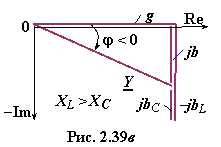

Величину, обратную комплексному сопротивлению Z, называют комплексной проводимостью Y последовательной RLC-цепи, т. е.
(2.70)
где и − активная и реактивная проводимости цепи; − индуктивная и ёмкостная проводимости RLC-цепи.
Итак, комплексная (полная) проводимость RLC-цепи
(2.71)
где и − модуль
и аргумент комплексной проводимости цепи.


На рис. 2.39в представлен треугольник проводимостей RLC-цепи в комплексной плоскости.